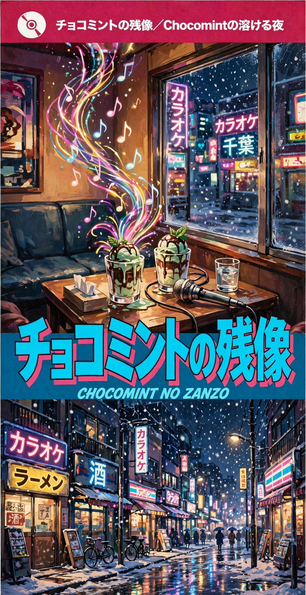
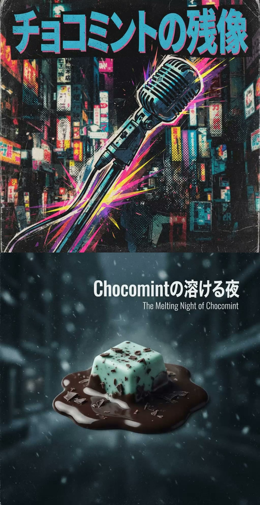

デジタルシングルCD v
RHYTHM GAME
ベストスコア
0
30 COMBO
GAME OVER
S
オートプレイ
FULL COMBO!
ハイスコア更新！
スコア （ベスト ）
精度 % 最大コンボ
演奏を中断しますか？
スコアは記録されません
ノーツが下の枠に重なったらタップ。長い帯は終わるまで押しっぱなし（パソコンは D / F / J / K）。矢印の形のノーツは、指を上へはじくフリックで取ります（パソコンは通常のキー押しで取れます）。演奏は左上のボタンで中断できます。
ノーツが遅れて感じる → ＋ ／ 早く感じる → −。Bluetoothイヤホンのときは ＋ が目安です。
拍の音と光に合わせてタップすると、タイミングのずれを測ってオフセットに反映できます。
ノーツが落ちる速さです。×1.0 がいままでの速さで、数字が大きいほど速く落ちます（×0.8〜×2.0、0.1刻み）。
振動は、対応している端末（Android など）だけで働きます。
拍の音に合わせてタップしてください。6回タップすると、ずれを測って自動でオフセットに反映します。
タップ 0 / 6
+0ms に合わせました
インストールすると、ホーム画面から開けて、オフラインでも使えます。